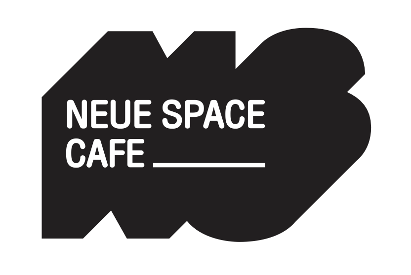
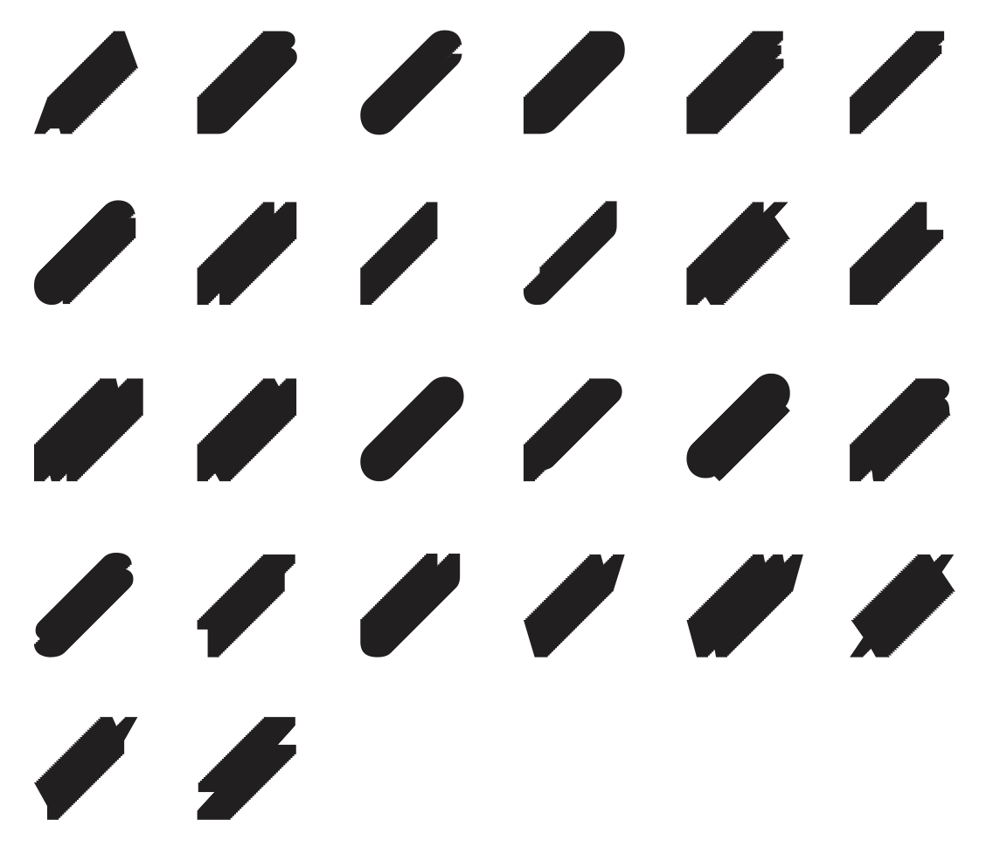
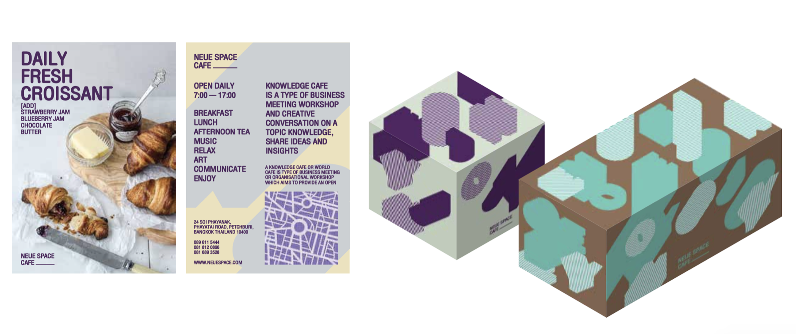
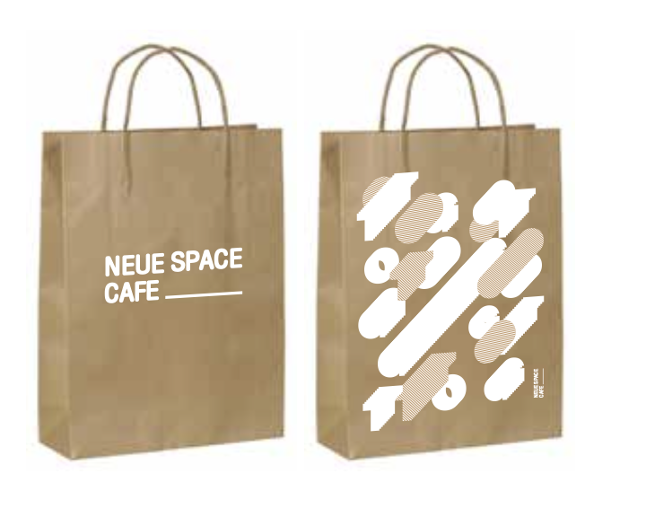
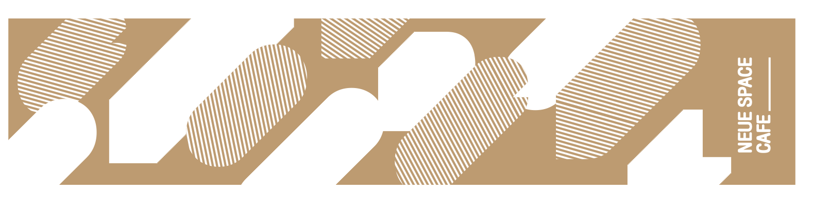

Nueu Cafe needed a brand built from nothing — something local but refined, with packaging that looked good on a shelf and told a story worth reading.

Nueu Cafe was a new café with a clear personality — friendly, a little quirky, and serious about their coffee. They needed a brand identity that matched that energy and could live on everything from a paper cup to a tote bag.
The starting point was the name: "Nueu" (หนื่อ) is a Thai word that means something like "over it" or "done with the ordinary" — a great foundation for building a visual tone that felt honest and a little different.

A mark that could work at any scale — on a small label, a storefront sign, or a social profile — with enough personality to be recognisable from across the room.
A graphic language that expressed the brand's quirky, warm character — flexible enough to be used across different contexts without feeling inconsistent.
Packaging designed to stand out on a shelf and feel premium without being cold — the kind of thing people keep rather than throw away.
Applied the system across bags, cups, and print materials — showing how the brand lives in the real world, not just on a style guide.


